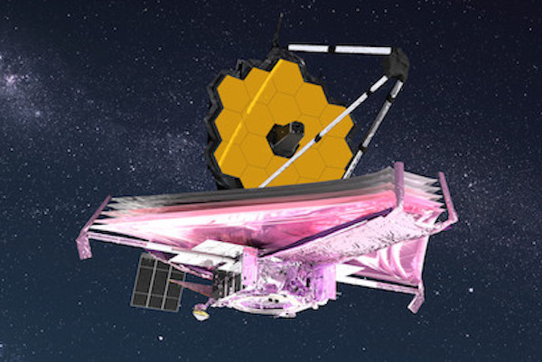

James Webb Space Telescope
James E. Webb ran the fledgling space agency from February 1961 to October 1968. He believed that NASA had to strike a balance between human space flight and science.
The James Webb Space Telescope is the world’s largest, most powerful, and most complex space science telescope ever built. Webb will solve mysteries in our solar system, look beyond to distant worlds around other stars, and probe the mysterious structures and origins of our universe and our place in it. Webb is an international program led by NASA with its partners, ESA (European Space Agency) and the Canadian Space Agency.